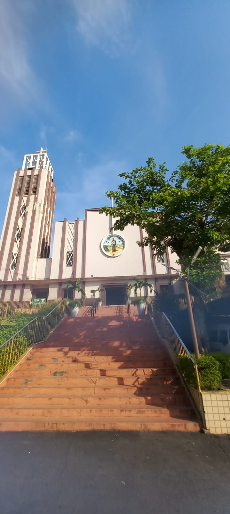
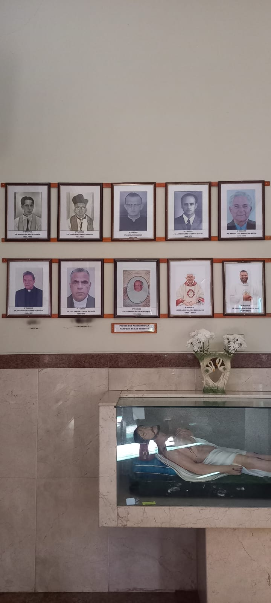
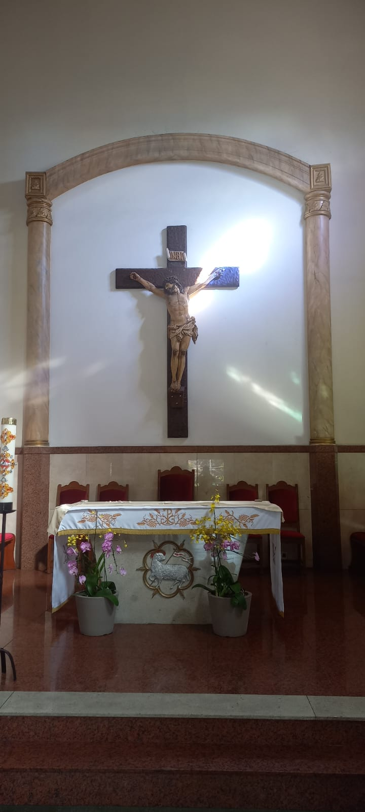
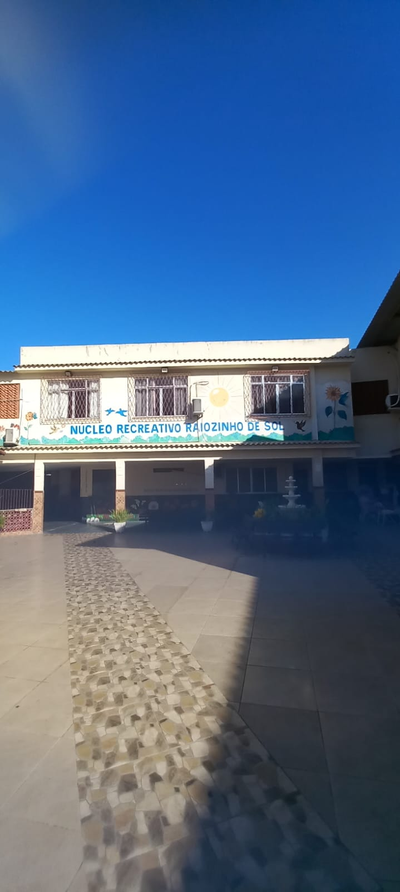

NOSSA HISTÓRIA
A Paróquia São Benedito em Pilares, Rio de Janeiro, fundada em 19 de março de 1934, foi elevada a Santuário Arquidiocesano em 20 de dezembro de 2024 por Dom Orani Tempesta. Localizada no Largo de Pilares, é reconhecida como um importante lugar de peregrinação, especialmente para orações pelas almas e confissões.
Fundação: A paróquia foi instituída em 1934, consolidando a presença da devoção a São Benedito na zona suburbana do Rio.
Nome do Bairro: O nome "Pilares" deriva de um antigo casarão com um grande varandão sustentado por pilares, conhecido popularmente na região.
Elevação a Santuário: Devido à intensa busca dos fiéis pelas celebrações de segunda-feira (19h) e pelo sacramento da confissão, a Igreja Matriz foi elevada a Santuário Arquidiocesano em 2024, sob o pastoreio do Padre Rodrigo Dias.
Nossos Padres
- Padre Manuel de Brito Franco
- Padre José Maria César Correa
- Padre Aldolino Gesser
- Padre Antonio José da Costa Grillo
- Padre Manoel Luiz Barros da Motta
- Padre Francisco Soares de Souza
- Padre Luiz Carlos Vital de Oliveira
- Padre Leonardo Silva de Oliveira
- Monsenhor José Mazine Rodrigues
- Padre Rodrigo de Oliveira Dias (Atual)


Nossos Serviços
- Missa das Almas
- Secretariado interno
- Confissões
- Atendimento espiritual
- Casamentos e Batizados
- Catequese
- Pré-Catequese
- Crisma
- Iniciação Cristã
- Missas Semanais
Ações Sociais
- Distribuição de alimentos
- Distribuição de roupas
- Atendimento com Psicólogo e Fisioterapia
- Grupos de Autoajuda (AA)
- Espiritualidade e apoio comunitário
- Educação e capacitação para a autonomia familiar
- Integração social
- Capelas comunitárias em apoio a comunidades
- Apoio a famílias em situações de crise (enchentes, desastres, vulnerabilidade social)
- Acupuntura
- Nutricão
- Advocacia
- Biomagnetismo Medicinal
- Psicopedagogia
